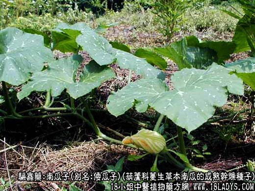
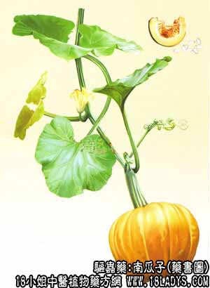

原文出处:本文转载自中药大全网。
原文连接:https://www.daquan.com/post/2101.html
原文连接:https://www.daquan.com/post/2101.html



南瓜子为新兴杀虫药。《本草纲目》只载南瓜。《纲目拾遗》谓其子食之脱发。近代国内外临床实验证明南瓜子有驱虫及杀虫疗效。
别名：北瓜子、倭瓜子。
来源：为葫芦科一年蔓生草本植物南瓜的成熟干燥种子。栽培。
产地：全国各地均产。
性状鉴别：南瓜子呈现扁卵圆形，长1.2~2厘米，宽0.6~1.2厘米，厚约0.3厘米。种皮淡黄白色，边缘有棱起的环边，顶端浙尖而平截，底部钝圆。剥开种皮，内含种仁一枚，外被灰绿色薄膜状胚乳，子叶两片，黄白色，富油性。气微香，味微甘。
主要成分：含南瓜子氨酸。南瓜子壳含糖醛。
药理作用：1、杀绦虫。能麻痹绦虫，作用于其中段和后段。其酒精浸液和榨出液分别在1 小时和45分钟内杀死绦虫。
2、抑制血吸虫。能抑制血吸虫幼虫的生长，有效成分为南瓜子氨酸。
炮制：捣碎，生用。
性味：甘、温。
归经：入胃、大肠经。
功能：驱虫，下乳。
主治：绦虫，血吸虫，晓虫等疾患。及因虫疾引起的腹痛胀满，产后乳汁不下等症。
临床应用：1、治绦虫病，适用于猪肉绦虫、牛肉绦虫、效果良好，配槟榔更能提高疗效，方如治绦剂。
2、在防治血吸虫病方面，虽然实验证实南瓜子氨酸能抑制血吸虫幼虫发育，但在实际应用上，杀虫效果不够理想，而口服作预防用剂量甚大，用药时间太长，费用大，不适宜于大规模应用。治疗上单用没有什么价值。
用量：每用60~120g，连皮，或去皮后磨碎或压成细末服用亦可。
处方举例：治绦剂：南瓜子粉60~120g（可加白糖矫味），先服（晨起空腹服），2小时后服槟榔煎剂（60~90g，煎煮1小时），再过半小时服泻剂（50%硫酸镁60毫升）。